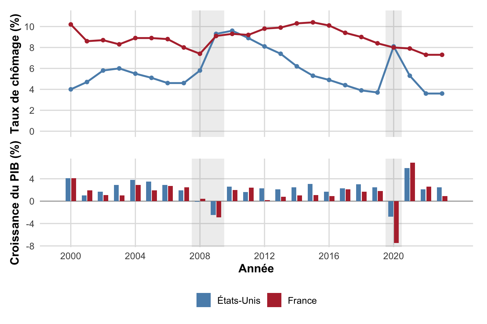
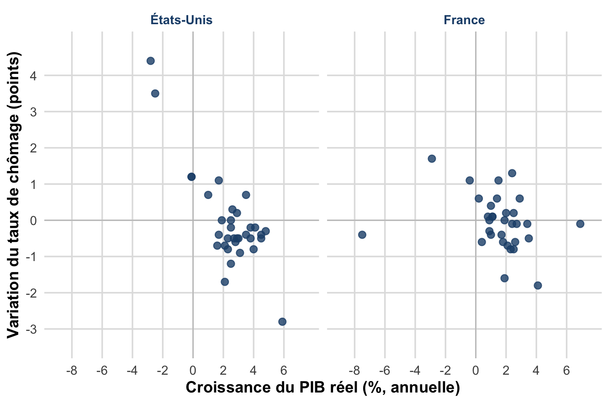
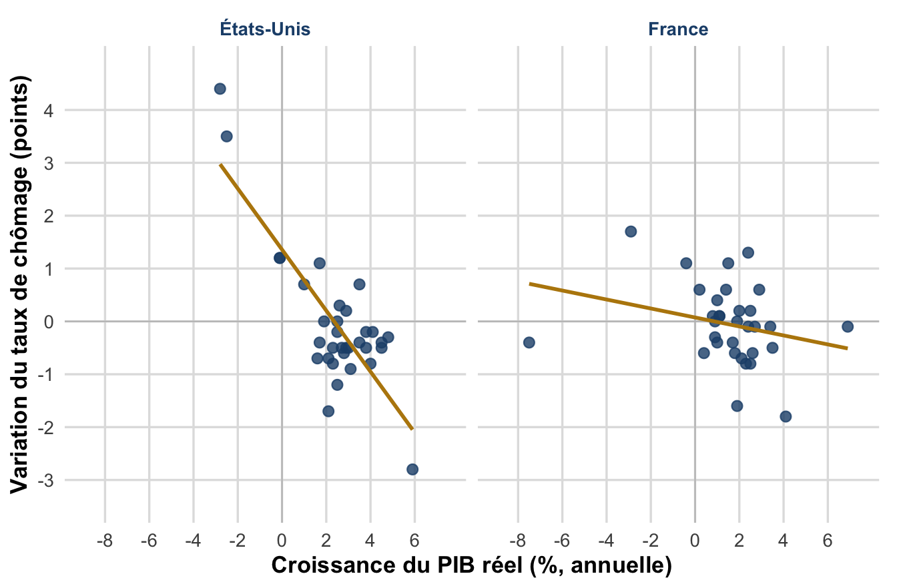
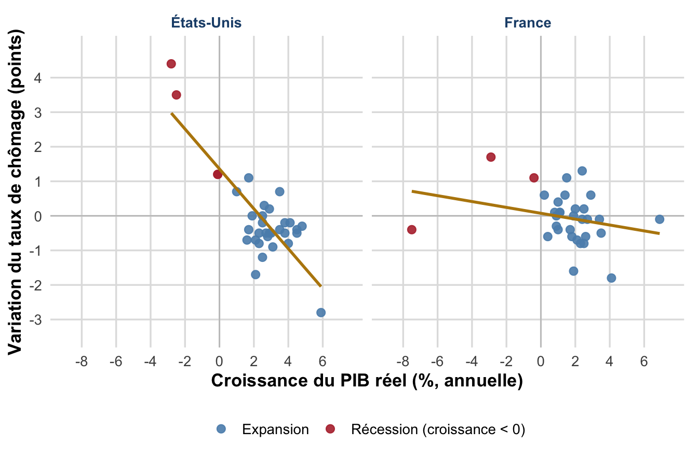
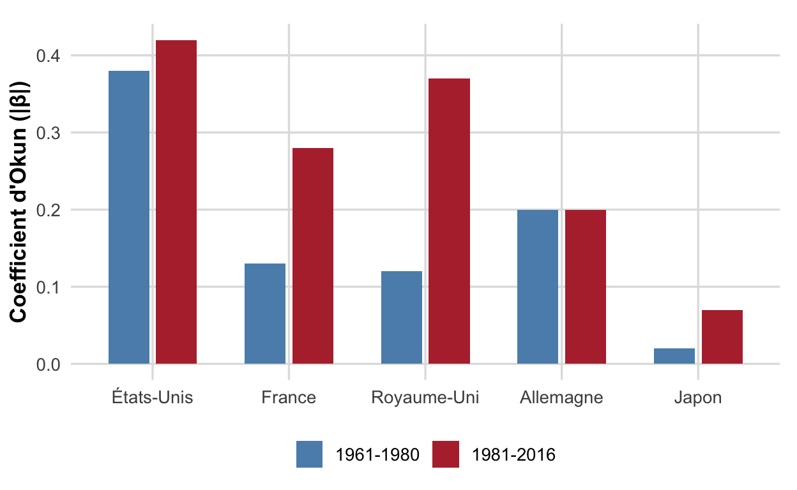

flowchart LR
A[Consommation des menages] --> C[Demande effective anticipee]
B[Investissement des entreprises] --> C
C --> D[Decision de production]
D --> E[Decision d embauche]
E --> F[Emploi ou chomage involontaire]
Chapitre II, Partie 2, §II.1-4 : De la critique du néoclassique à la relation croissance-chômage
L2 AES : Semestre 1
Chapitre II, Partie 2, §II.1-4 : d’après les cours de M. Ouedraogo (2025-2026).
À l’issue de cette séance, vous saurez :
Pour les néoclassiques (CM 5), le chômage observé est volontaire : il résulte d’un salaire réel maintenu au-dessus du salaire d’équilibre (SMIC, conventions collectives, rigidités). La solution est alors de baisser le coût du travail.
Keynes conteste ce diagnostic sur deux plans : la nature de l’offre et de la demande de travail, et le niveau d’analyse (macroéconomique, non partiel).
Conséquence. Le marché du travail n’est pas autonome : son équilibre ne peut résulter que d’un équilibre général portant sur l’ensemble des marchés (biens et services, capitaux, monnaie, travail).
Si l’offre de travail est décroissante avec \(w\), une baisse des salaires accroît l’offre de travail, et donc, toutes choses égales par ailleurs, aggrave le chômage au lieu de le résorber.
Lecture néoclassique
La productivité marginale et le coût du travail déterminent l’offre des entreprises, qui maximise leur profit. L’offre trouve toujours sa demande (loi des débouchés de Say).
Lecture keynésienne
La demande de travail \(L^d\) n’est qu’une demande dérivée : elle dépend des débouchés que les entreprises anticipent sur le marché des biens et services, pas d’un pur calcul technique.
Demande effective. Demande anticipée par les entreprises sur le marché des biens et services (consommation des ménages + investissement des entreprises), qui détermine leurs décisions de production et donc d’embauche.
Ce n’est pas le coût du travail mais l’état de la conjoncture économique, via la demande effective, qui gouverne les décisions d’embauche des entreprises.
flowchart LR
A[Consommation des menages] --> C[Demande effective anticipee]
B[Investissement des entreprises] --> C
C --> D[Decision de production]
D --> E[Decision d embauche]
E --> F[Emploi ou chomage involontaire]
Deux décisions indépendantes, la consommation des ménages et l’investissement des entreprises, déterminent, via la demande effective anticipée, le niveau de production et donc d’embauche.
Si la demande effective anticipée est faible, l’investissement et l’embauche le sont aussi. L’économie peut alors se stabiliser dans un équilibre de sous-emploi : offre et demande de biens s’égalisent, mais à un niveau de production trop faible pour assurer le plein emploi.
Aucun mécanisme de marché, ni la flexibilité des prix, ni celle des salaires, ne ramène spontanément l’économie au plein emploi.
Chômage involontaire. Situation d’individus qui souhaitent travailler au salaire en vigueur sur le marché du travail, mais qui, faute d’embauches suffisantes de la part des entreprises, ne trouvent pas d’emploi.
À la différence du chômage volontaire néoclassique (refus de travailler au salaire d’équilibre), le chômage involontaire résulte d’une insuffisance de la demande globale, non d’un dysfonctionnement du marché du travail lui-même.
Pour l’entreprise
Le salaire est un coût de production : c’est la seule dimension retenue par l’analyse néoclassique.
Pour le ménage
Le salaire est aussi un revenu, source de consommation, donc, in fine, une source de demande adressée aux entreprises.
En ignorant la seconde dimension, la politique de baisse des salaires se retourne contre elle-même : elle réduit le coût du travail, mais aussi la demande effective qui détermine l’embauche.
Contrairement à la recommandation néoclassique, une baisse générale des salaires :
La baisse des salaires ne résout pas le chômage involontaire : elle peut l’aggraver, dans une logique de spirale déflationniste (crise des années 1930).
flowchart LR
A[Baisse des salaires] --> B[Baisse du revenu des menages]
B --> C[Baisse de la demande effective]
C --> D[Baisse de la production]
D --> E[Baisse de l embauche]
E --> A
La flèche de retour illustre le caractère auto-entretenu de la spirale déflationniste : sans relance de la demande, rien ne l’arrête spontanément.
Pour sortir l’économie de l’équilibre de sous-emploi, il faut des politiques budgétaires et monétaires expansives :
D’après Chapitre II, Partie 2, §II.3.b : implications de politique économique.

Figure 1: Taux de chômage annuel et croissance du PIB réel, France et États-Unis, 2000-2023 (bandes grises : récessions de 2008-2009 et 2020). Le chômage se retourne nettement à la hausse chaque fois que la croissance devient négative, et sa hausse est plus brutale et rapide aux États-Unis, où l’ajustement de l’emploi est plus flexible. Sources : Bureau of Labor Statistics (États-Unis) ; Banque mondiale, WDI, indicateurs SL.UEM.TOTL.NE.ZS (chômage, estimation nationale) et NY.GDP.MKTP.KD.ZG (croissance du PIB réel).
Loi d’Okun. Relation empirique de corrélation négative entre le taux de croissance économique et la variation du taux de chômage. \[ \Delta u = -\beta\,(g - \bar g) \] où \(u\) est le taux de chômage, \(g\) le taux de croissance du PIB réel, \(\bar g\) le taux de croissance nécessaire pour stabiliser le chômage, et \(\beta > 0\) le coefficient d’Okun.
Cliquez pour faire apparaître le nuage, puis la droite de régression, puis les années de récession.



Chaque point est une année : 1991-2023 pour les États-Unis, 1992-2023 pour la France (la variation du taux de chômage nécessite une année de base, disponible un an plus tard pour la France). Croissance du PIB réel en abscisse, variation du taux de chômage en ordonnée. La pente de la droite (en or) est une estimation du coefficient d’Okun négatif (\(-\beta\)) : nettement plus raide aux États-Unis qu’en France. Sources : Bureau of Labor Statistics (États-Unis) ; Banque mondiale, WDI, indicateurs SL.UEM.TOTL.NE.ZS (chômage, estimation nationale) et NY.GDP.MKTP.KD.ZG (croissance du PIB réel).

Figure 5: Le coefficient d’Okun (valeur absolue, |β|) pour cinq pays sur deux sous-périodes, 1961-1980 et 1981-2016 : les économies à contrats plus flexibles (États-Unis, Royaume-Uni) ajustent davantage l’emploi. Source : Blanchard et Cohen (2017), Macroéconomie, tableau des coefficients d’Okun par pays (repris par CORE, The Economy, 2018).
Blanchard et Cohen (2017), Macroéconomie : coefficients d’Okun estimés par pays et sous-période, 1961-1980 et 1981-2016 (repris par CORE, 2018).
D’après Blanchard et Cohen (2017), Chapitre II, Partie 2, §II.4.
Le coefficient d’Okun n’est pas universel : il dépend de la façon dont les entreprises ajustent l’emploi aux variations de la production, donc de la structure des économies (flexibilité des contrats, législation sur l’embauche et le licenciement).
Pour aller plus loin
La séance de TD 6 reprend la critique keynésienne et la loi d’Okun avec des données réelles par pays, et propose la correction du CC1 (évalué en séance 4).
Préparez vos questions sur la demande effective et le calcul du coefficient d’Okun avant la séance.
cours/chap2.qmd)Sources : Chapitre II, Partie 2, §II.1-4 (Ouedraogo, 2025-26) ; Blanchard & Cohen (2017), Macroéconomie.
Macroéconomie 1, L2 AES